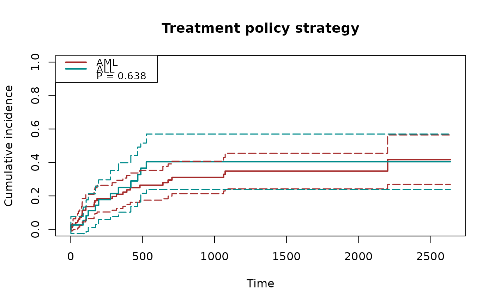
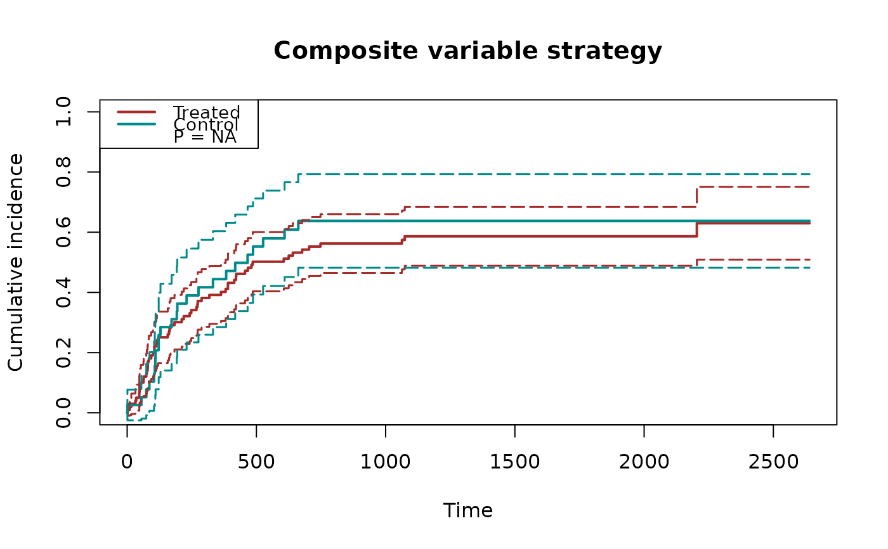
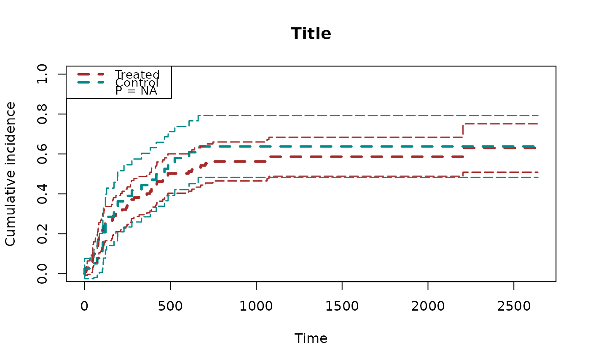
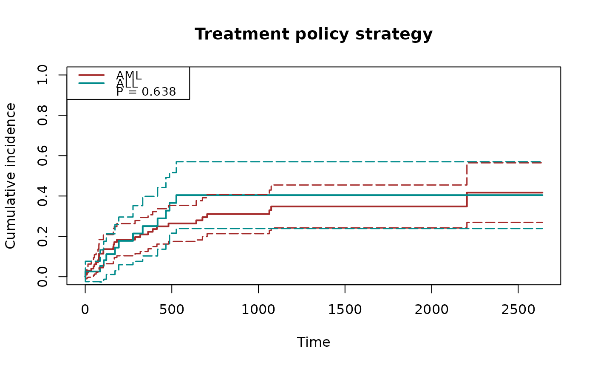
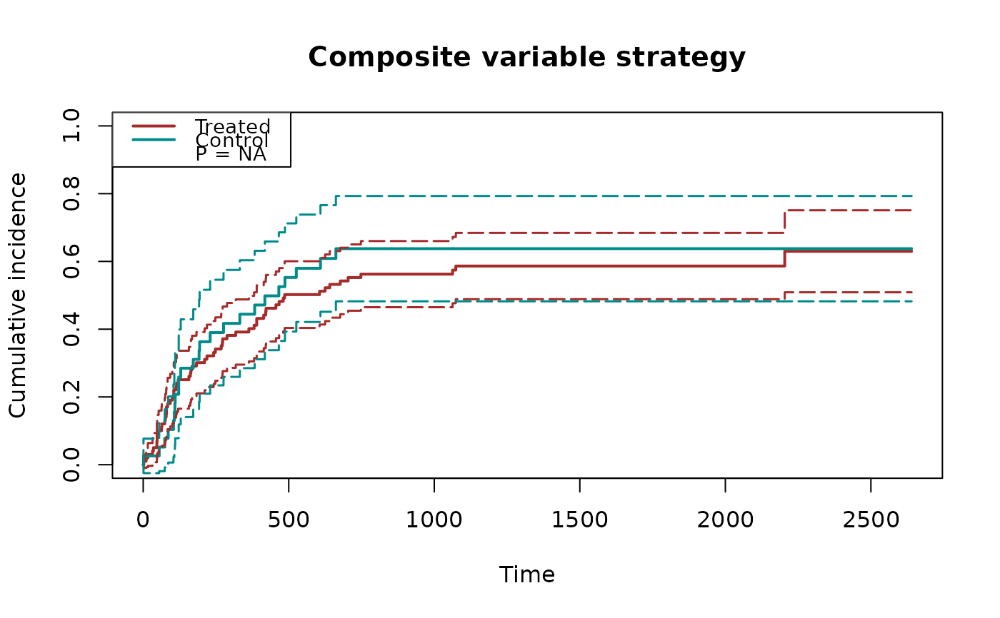
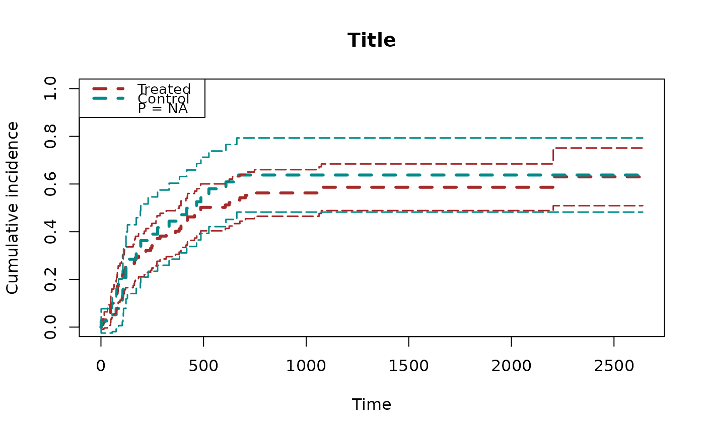

This function plots the estimated potential cumulative incidence function, along with pointwise confidence intervals.
plot_inc(
fit,
decrease = FALSE,
conf.int = 0.95,
nboot = 0,
seed = 0,
xlab = "Time",
xlim = NULL,
ylim = c(0, 1),
plot.configs = list(ylab = NULL, main = NULL, cex = 0.9, lty = 1, lwd = 2, ci.lty = 5,
ci.lwd = 1.5, legend = c("Treated", "Control"), col = c("brown", "darkcyan"),
legend.cex = 0.9, show.p.value = TRUE),
...
)Arguments
- fit
A fitted object returned by the function
surv.tteICEorscr.tteICE.- decrease
A logical variable indicating the type of curve to display. If
decrease = FALSE(default), the function displays the cumulative incidence functions (CIFs). Ifdecrease = TRUE, the function instead displays the survival functions.- conf.int
Confidence level for the interval. If
conf.int = NULL, no confidence interval is provided.- nboot
Number of resampling in bootstrapping. By default,
nboot = 0, meaning no bootstrap is performed and the standard error is computed using the explicit analytical formula.- seed
Sets the random seed used when generating bootstrap samples.
- xlab
Label for x-axis.
- xlim
A numeric vector of length 2 giving the limits of the x-axis. If
xlim=NULL(default), the range is determined automatically from the data.- ylim
A numeric vector of length 2 giving the limits of the y-axis. Defaults to
ylim=c(-1, 1).- plot.configs
A named
listof additional plot configurations. Common entries include:ylab: character, label for the y-axis (default:ylab=NULL, use the default label).main: character, title for the plot (default:main=NULL, use the default label).lty: line type for the curve (default: 1).lwd: line width for the curve (default: 2).ci.lty: line type for confidence interval curves (default: 5).ci.lwd: line width for confidence interval curves (default: 1.5).legend.cex: font size for the legend (default: 0.9).
- ...
Additional graphical arguments passed to function
plot.defaultor functioncurve
Value
Plot the cumulative incidence function results from a tteICE object
See also
Examples
## load data and fit the model
data(bmt)
bmt = transform(bmt, d4=d2+d3)
A = as.numeric(bmt$group>1)
## Model with competing risk data
fit1 = surv.tteICE(A, bmt$t2, bmt$d4, 'treatment')
## plot asymptotic confidence intervals based on explicit formulas
plot_inc(fit1, ylim=c(0,1),
plot.configs=list(legend=c('AML','ALL'), show.p.value=FALSE) )
 # \donttest{
## plot bootstrap confidence intervals (may take some seconds)
plot_inc(fit1, nboot=200, ylim=c(0,1),
plot.configs=list(legend=c('AML','ALL')) )
#> Warning: "nboot" is not a graphical parameter
#> Warning: "nboot" is not a graphical parameter
#> Warning: "nboot" is not a graphical parameter
#> Warning: "nboot" is not a graphical parameter
#> Warning: "nboot" is not a graphical parameter
#> Warning: "nboot" is not a graphical parameter

# }
## Model with semicompeting risk data
fit2 = scr.tteICE(A, bmt$t1, bmt$d1, bmt$t2, bmt$d2, "composite")
## plot asymptotic confidence intervals based on explicit formulas
plot_inc(fit2, ylim=c(0,1), plot.configs=list(add.null.line=FALSE))

## plot bootstrap confidence intervals
plot_inc(fit2, nboot=200, ylim=c(0,1),
plot.configs=list(lty=2, lwd=3,main="Title"))
#> Warning: "nboot" is not a graphical parameter
#> Warning: "nboot" is not a graphical parameter
#> Warning: "nboot" is not a graphical parameter
#> Warning: "nboot" is not a graphical parameter
#> Warning: "nboot" is not a graphical parameter
#> Warning: "nboot" is not a graphical parameter

# \donttest{
## plot bootstrap confidence intervals (may take some seconds)
plot_inc(fit1, nboot=200, ylim=c(0,1),
plot.configs=list(legend=c('AML','ALL')) )
#> Warning: "nboot" is not a graphical parameter
#> Warning: "nboot" is not a graphical parameter
#> Warning: "nboot" is not a graphical parameter
#> Warning: "nboot" is not a graphical parameter
#> Warning: "nboot" is not a graphical parameter
#> Warning: "nboot" is not a graphical parameter

# }
## Model with semicompeting risk data
fit2 = scr.tteICE(A, bmt$t1, bmt$d1, bmt$t2, bmt$d2, "composite")
## plot asymptotic confidence intervals based on explicit formulas
plot_inc(fit2, ylim=c(0,1), plot.configs=list(add.null.line=FALSE))

## plot bootstrap confidence intervals
plot_inc(fit2, nboot=200, ylim=c(0,1),
plot.configs=list(lty=2, lwd=3,main="Title"))
#> Warning: "nboot" is not a graphical parameter
#> Warning: "nboot" is not a graphical parameter
#> Warning: "nboot" is not a graphical parameter
#> Warning: "nboot" is not a graphical parameter
#> Warning: "nboot" is not a graphical parameter
#> Warning: "nboot" is not a graphical parameter
